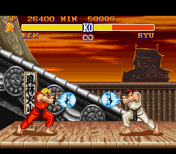

CONFLICT. derp.

As a freelance musician, I've worked in several organizations as a Music Director. Being an MD means you work really hard to make somebody else, who may or may not have good musical instincts, sound and look good in public.
One of my first jobs of this sort was working as MD in a new synagogue, with a religious leader who had started the community modeled on contemporary New-Age-y practices. Lots of meditating, 'honoring spirit', big new-age-y band.
I'm not a religious person myself, but I grew up in a fairly religious Jewish community. I know the music. I'm a good arranger, and I did a good job presenting this leader, who we'll call Ding, the way he wanted, and creating a musical backdrop for the community he was creating at reasonable price point for both of us.
I made a decent monthly fee.
Ding got a pro band making him sound pro.
The conflict that developed was a slow building, but very persistent one.
It's a conflict that I have been involved in more times than I'd like, with many different people. And I wonder what I'm doing to perpetuate it.
THE CONFLICT:
Basically, I'd spend a bunch of time working with Ding, eliciting what he wanted and working behind the scenes to make it happen. Hiring other musicians, arranging music, creating set lists, compiling performance books... the nitty gritty stuff that an MD does.
Then inevitably, on the day of a performance, Ding would realize that "No, this isn't right. We need to re-order this, and do this other song we haven't prepared, and x,y,z.... etc." Or instantly rearrange something, rendering all the notes worthless.
Or Ding would be very complementary, and say "I really love the way you play this piece, why don't you take the lead on it?"
And then, inevitably, on the day of performance I'd start, and he'd jump right in and take over.
And inevitably, after one of these "Now let's change everything" moments, Ding would come up to me afterwards, and apologize and give a million great reasons why he had to do what he did.
And I'd usually begrudgingly accept his apology.
How did you handle that conflict?
Honestly - I did not handle these little conflicts very well.
I would give him feedback, "You changed what we'd prepared, and that really makes me feel like you don't value the work I'm doing."
He'd apologize.
But nothing would ever change.
The same thing happened over. And over. And over.
I developed a lot of resentment.
We worked together for about 4 years, in a significant part-time capacity.
This was very difficult. Because my job was to make him look good.
And he made a regular practice of undermining my work and choices.
It's difficult to maintain the desire to do the job of presenting somebody well as their MD when they behave like this.
Did your actions make the conflict better or worse?
The actions I took were to confront him about an action when I felt he'd done something.
Talk it over. And he'd apologize.
But then nothing would change.
And at that point, I did not follow up with real feedback about this pattern.
I just noticed this was a pattern, and got frustrated.
I didn't make a big systemic critique of his behavior for a few reasons.
It was a job. I was hired to work with HIM. And that's him.
I was dependent on him for income - and as a musician, dependable regular work is not easy to come by. I didn't want to sever that relationship, even as that relationship became more and more strained. So I held it in.
UNTIL... after about 4 years of working together, we had a big event in the works.
I was to be paid one lump sum for the commitment.
He had given me the wrong material to transcribe for a big piece.
And I'd done the transcription, which took about 5-6 hours of work.
About a week before the big event, he realized he'd made a mistake, and wanted me to redo the transcription.
And I said, "Ok, but you need to pay me more for my time to redo the work."
And... he accused me of being greedy and controlling.
I honored that commitment, but gave notice shortly thereafter - when I'd found a similar, though in many ways less desirable, position.
Really, this is a big reason I'm going into programming.
I don't expect that changing careers means I will not have to deal with difficult employers.
But, as a programmer with in-demand skills - employers have to be a little more careful with how they treat employees. I will have more options, and won't be trapped in a job that I can't leave because there aren't desirable jobs around that can readily replace it.
But - when I do get into conflicts in the workplace, or at DBC -
Which I will, because I think respectful conflict is an important part of any relationship -
- I hope to deal with the person directly.
- I hope to speak out what's difficult, and not hold it in.
- Resentment is not beneficial to anyone.
- I hope the person can hear me, and I hope I can hear their observations about me.